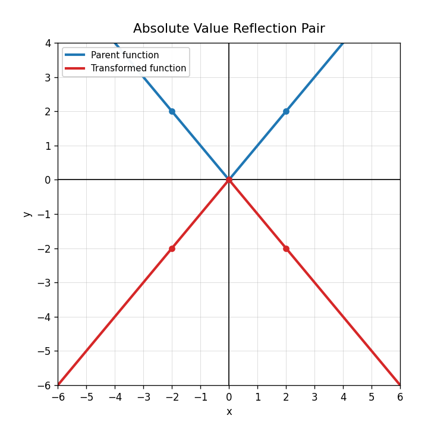

For $g(x)=0.5f(x)$, identify the transformation.
For $h(x)=-|x|$, what transformation has been applied to $f(x)=|x|$?
Use the graph pair. Is the transformed graph a stretch, compression, reflection, or combination? Explain.

A student says $g(x)=-2f(x)$ is only a vertical stretch because of the 2. Explain what the student missed.
Identify the translation in $g(x)=(x+3)^2$.
Identify the translation in $g(x)=|x|-6$.
The point $(0,0)$ is shifted to $(-2,4)$. Describe the translation.
What does vertex mean for a quadratic or absolute-value graph?
Write an equation for a translated quadratic with vertex at $(5,1)$.
Complete the table for $g(x)=|x-2|+1$.
| $x$ | 0 | 1 | 2 | 3 | 4 |
|---|---|---|---|---|---|
| $g(x)$ |
Explain how you could use three key points to check whether a translated graph is correct.
Design two different translated parent functions that both pass through $(0,2)$. Explain why they are different.
Which family has a V-shape?
Which family has a constant rate of change?
A table has outputs $0,1,4,9,16$ for inputs $0,1,2,3,4$. Which family is suggested?
Why can a transformed quadratic still be classified as quadratic?